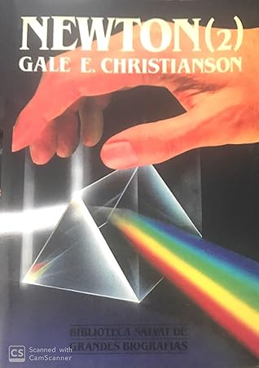

Newton (2)
Reseña por Jorge I. Zuluaga

Ver reseña en GoodReads (necesita cuenta)
Si pudiera escribir una biografía o dictar una charla sobre él, la titularía así: "Newton: ángel y demonio".
Mientras que el primer tomo nos revela los más mínimos detalles de la primera mitad de la vida del virtuoso de Lincolnshire (desde su nacimiento hasta la edad de 38 años), este volumen describe exhaustivamente los eventos más importantes que ocurrieron en la segunda mitad de su vida, que terminó a una edad bastante avanzada para su época: 84 años.
El aspecto más notable de esta segunda parte lo constituye la descripción pormenorizada de su enfrentamiento epistolar con sus tres más grandes "enemigos intelectuales": Robert Hooke, John Flamsteed y Gottfried Leibniz.
La saña con la que Newton enfrenta a estos otros gigantes de la ciencia pone en evidencia los aspectos más macabros de su humanidad: un ego monumental (tan grande como su inteligencia), una sensibilidad exacerbada por la más mínima crítica (Hooke), un complejo tiránico (John Flamsteed) y un ardoroso deseo de ser reconocido como el primero en casi cualquier cosa (Leibniz).
La parte dedicada a su vida como servidor público (más de 100 páginas) es extensa y, a decir verdad, un poco aburrida. Newton fue parlamentario en dos oportunidades, aunque se cuenta que no fue muy bueno: su única intervención en la cámara fue para pedir que cerraran una ventana porque estaba haciendo mucho frío. Después fue inspector de la Casa de la Moneda, cargo por el que renunció a su cátedra en Cambridge (de profesor a burócrata) y en la que se convirtió en una especie de "Sherlock Holmes" del siglo XVII, temido y amenazado por los falsificadores y odiado por igual por sus subalternos y empleados. Finalmente consiguió el cargo más alto en su vida, director de la Casa de la Moneda, cargo que obtuvo al usar sus influencias políticas en el gobierno de turno.
Por todo esto murió rico (no sin dejar, sin embargo, de ayudar a toda su familia en vida y, con su herencia, a un sinnúmero de sobrinos que le sobrevivieron).
Dos aspectos increíbles sobre Newton son revelados en esta detallada biografía:
1) Al parecer tuvo una relación personal muy profunda con un hombre. No se sabe el alcance que tuvo (si llegó a ser física), aunque se duda por el carácter puritano del profesor-burócrata.
2) Vivió muchos años con su sobrina (hija de una hermanastra), Catherine Barton, que fue, por sí sola, un personaje en la época (hay incluso un libro sobre ella que se titula "Newton's Niece" o "La sobrina de Newton", que ya agregué a mi lista de libros por leer). Se cree que Newton podría haber estado enamorado en algún momento de su vida de su sobrina.
Y este es solo un abrebocas para lo que encontrarán en esta detallada biografía.
¡Lean sobre Newton!